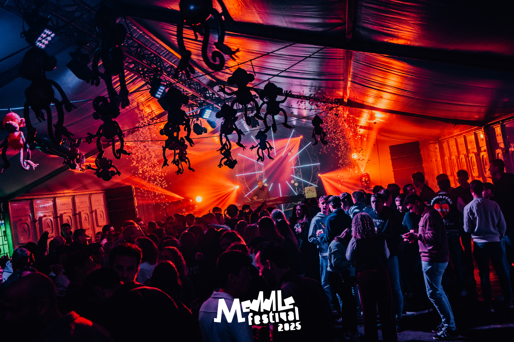
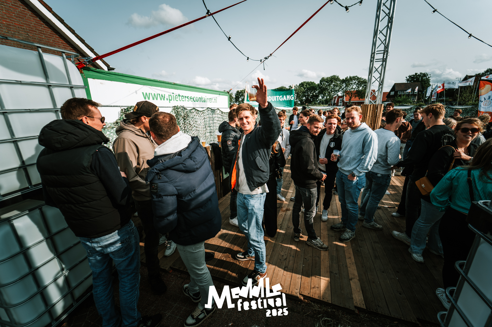
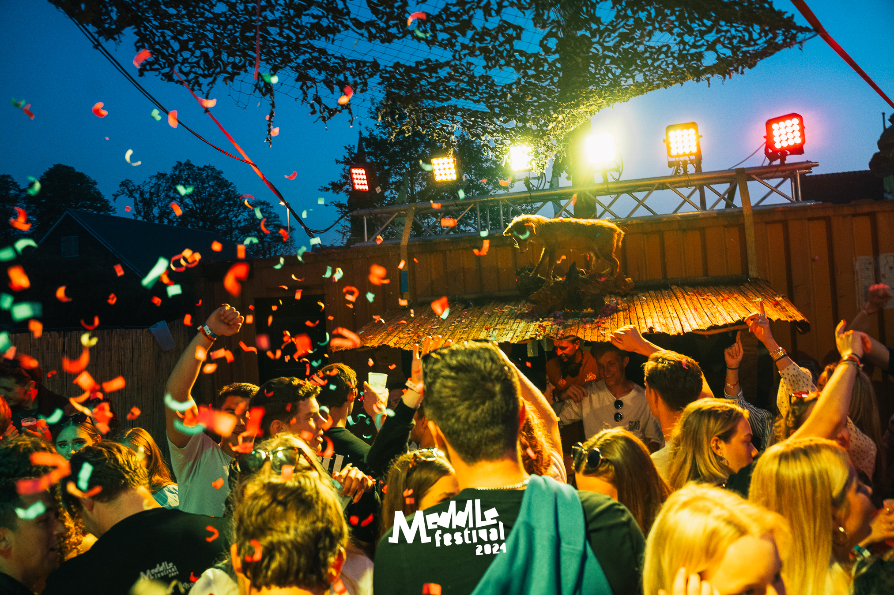
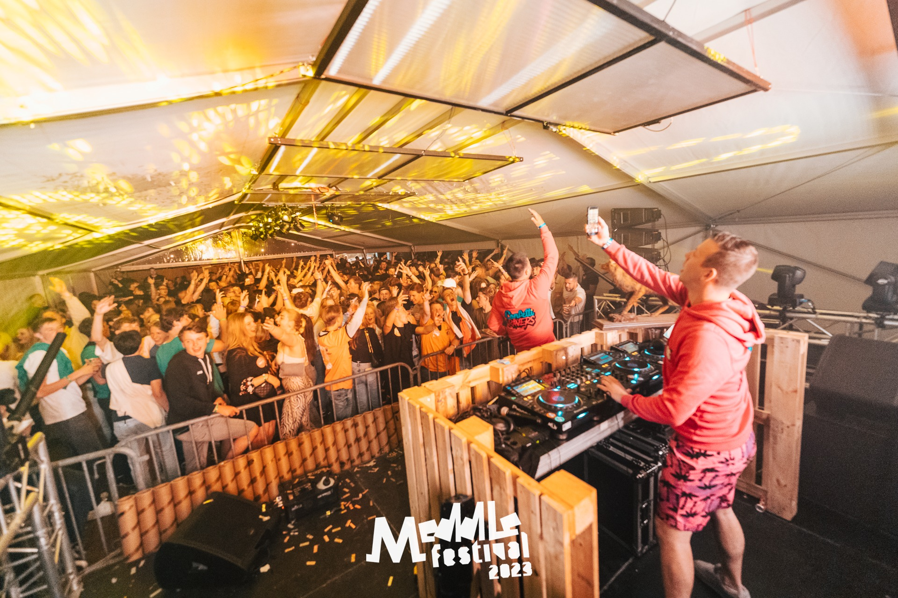
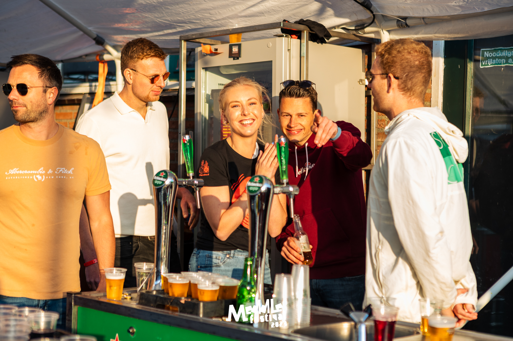

Bekijk hier de foto's van de afgelopen jaren!


Meddle Festival | Zaterdag 2025
Bekijk alle foto's van de eerste festivaldag.
Meddle Festival | Zondag 2025
Alle hoogtepunten van dag twee!
Meddle Festival | Zaterdag 2024
Bekijk hier de foto's van de eerste festival dag uit 2024.
Meddle Festival | Zondag 2024
Bekijk hier de foto;s van de tweede festival dag uit 2024
Meddle Festival | Zaterdag 2023
Bekijk hier de foto's van de eerste festival dag uit 2023.
Meddle Festival | Zondag 2023
Bekijk hier de foto's van de tweede festival dag uit 2023